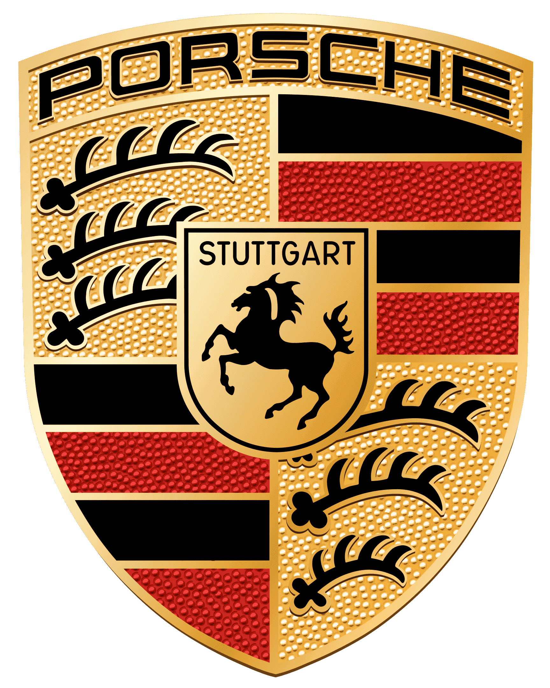

Aprenda criando
Além de simples carros
Algumas curiosidades sobre as Porsches
Muito além da engenharia de ponta, o universo dos Porsches ultrararos é movido por recordes históricos de leilões, edições limitadas
a pouquíssimas unidades no mundo e tecnologias revolucionárias que nasceram nas pistas de corrida e redefiniram o mercado de luxo.

Você Sabia?
Três curiosidades sobre a Porsche
01. Chave à esquerda nascida nas corridas:
A ignição dos carros fica do lado esquerdo do volante devido a uma antiga tradição das 24 Horas de Le Mans. Os pilotos precisavam correr até os carros estacionados e dar a partida manualmente na largada. Posicionar a chave à esquerda permitia ligar o motor com uma mão enquanto a outra já engatava a primeira marcha.
02. O primeiro projeto foi um carro elétrico:
Antes mesmo de fundar a empresa oficial, Ferdinand Porsche desenvolveu o seu primeiro veículo em 1898, chamado P1. O automóvel era totalmente movido a eletricidade, entregava cerca de 3 cavalos de potência e atingia a velocidade máxima de 35 km/h, antecipando em mais de um século a tecnologia do modelo Taycan.
03. O cavalo compartilhado com a Ferrari:
O cavalo empinado no centro do brasão da Porsche representa a cidade alemã de Stuttgart, fundada sobre um antigo criadouro de cavalos. O símbolo é o mesmo da italiana Ferrari, pois o aviador Francesco Baracca usava o brasão da cidade alemã pintado em seu avião antes do cavalo ser adotado pela marca de Maranello.